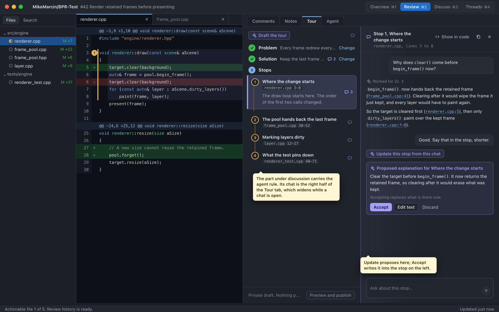
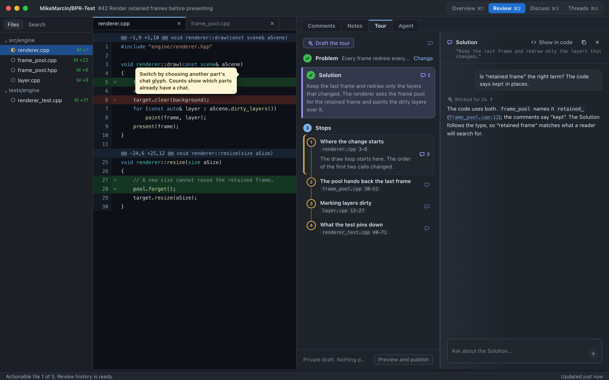
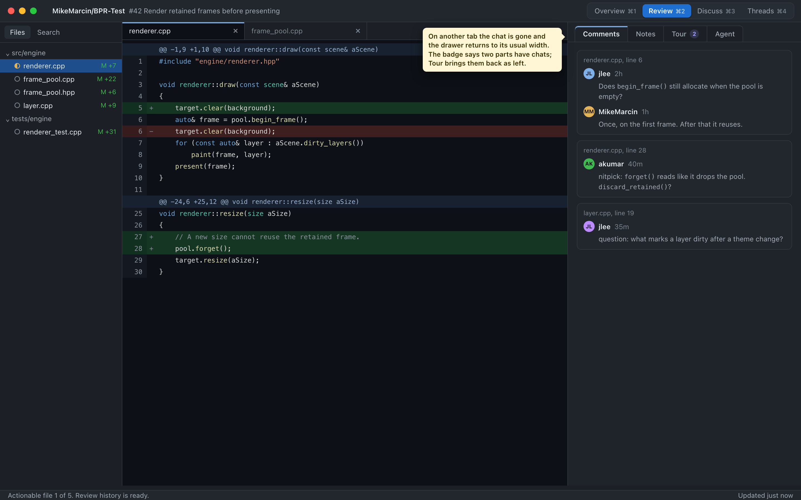
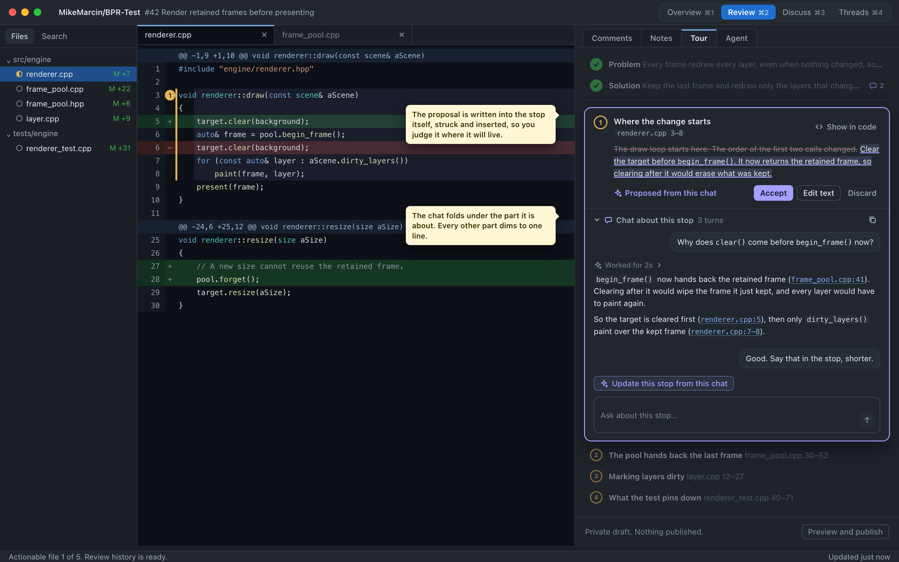
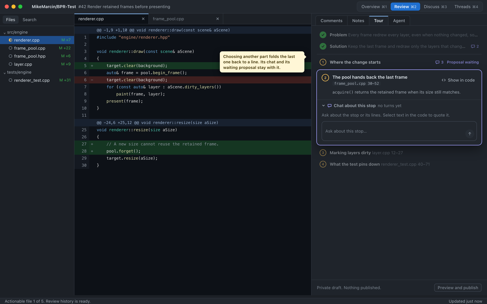
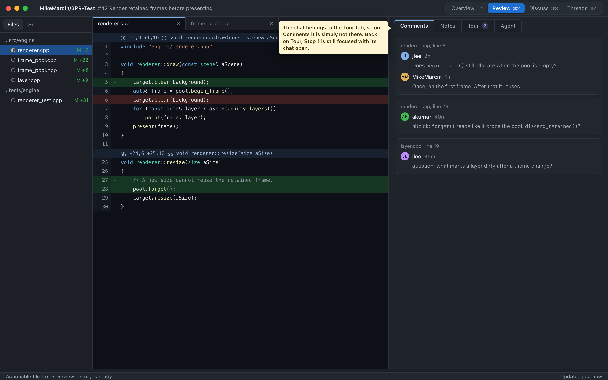
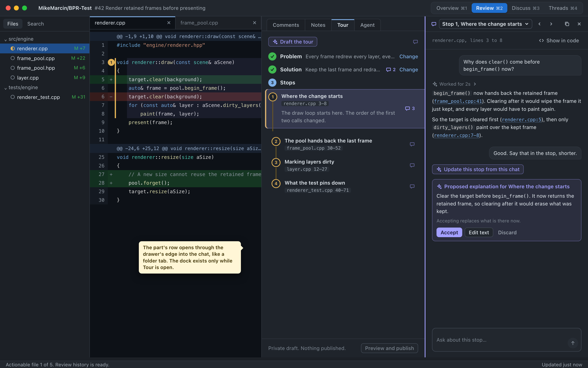
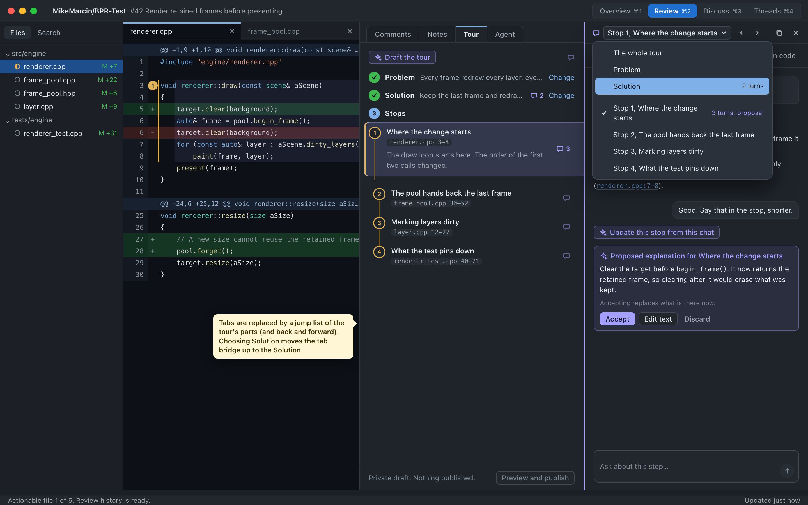
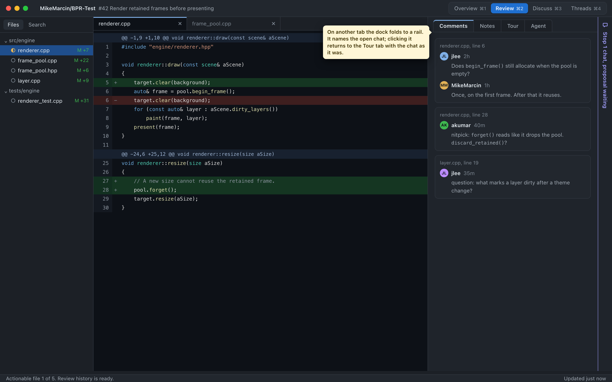

BPR-1914 v004 docks the side chat at the window's edge, apart from the Tour tab it is about; with the drawer on Comments it still shows a stop's chat. Each direction below shows a part under discussion, its conversation, Update's proposal, switching to another part's chat, and the drawer on Comments. Dark theme, the shipped colour roles and the BPR-1881 agent accent. The yellow notes are for review only. Each frame is frame.html?dir=A&f=1 and is drawn at the window's 1440 by 900.
The Tour tab widens into two columns while a chat is open: the tour on the left, the chat on the right. The part under discussion carries the agent rule, and other parts show their chat count on the glyph. Leaving the Tour tab closes the chat and the drawer returns to its usual width. The cost is width: the code narrows while you talk.



Choosing a part opens it as a focused card, and its chat folds out beneath it. Every other part dims to one line. Update's proposal is written into the part itself, struck and inserted, so you judge it where it will live. One part is open at a time, there are no tabs, and the drawer keeps one width. The cost: a long chat pushes the stops below it out of view.



The docked chat stays, but only while the Tour tab is open. The part's row opens through the drawer's edge into the chat, like a folder tab. A jump list of the tour's parts, with back and forward, replaces the tabs. On another tab the dock folds to a rail that names the open chat. The cost: two panes of chrome, and the rail is one more thing at the window's edge.


